HIST 270 · History of China · Chapter 14 · Lecture 4
The Garden and the Flood
Late-Ming Cities Flourished While the Dynasty Ran Out of Money, Grain, and Silver
1550s–1644 · Study Buddy edition
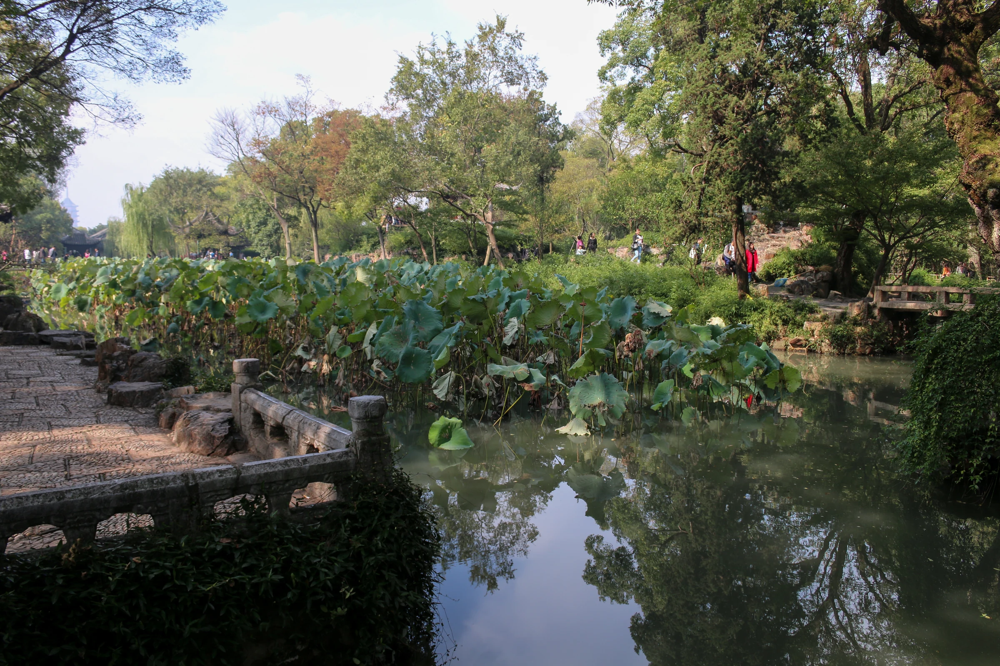
The Humble Administrator's Garden (Zhuozheng Yuan), Suzhou, one of the Ming gardens that still survive. Photo: Almbauer. Released into the public domain, Wikimedia Commons.
Q10 story · The cities of Jiangnan · 1500s–1600s
Rich Cities Created a New Culture of Entertainment
Many literati with ample means chose to live in cities, where they could pursue an elegant life.
As cities grew and commerce thrived, people with money to spend paid for entertainment of many kinds.
This city culture belonged to merchants and townspeople, not only to scholars.
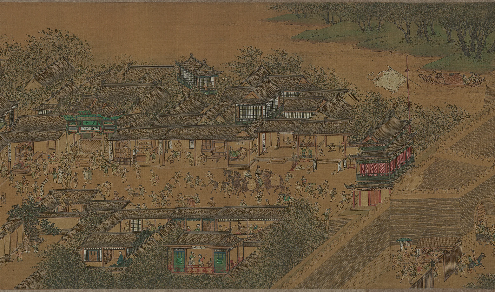
Along the River During the Qingming Festival, Ming version attributed to Qiu Ying, handscroll, detail of the city gate and the shops inside it. Liaoning Provincial Museum. Public domain painting; photo released CC0, Wikimedia Commons.
Sources: Ebrey, Ch. 14, pp. 227, 241–242. Scroll: Liaoning Provincial Museum via Wikimedia Commons.
Q10 story · Suzhou · 1500s
Wealthy Jiangnan Families Built Gardens as Works of Art
Well-off families built gardens inside the walls that surrounded their homes.
Like landscape painters, garden designers used bamboo, twisted pines, and craggy rocks to capture nature.
About twenty Ming gardens still survive in Suzhou.
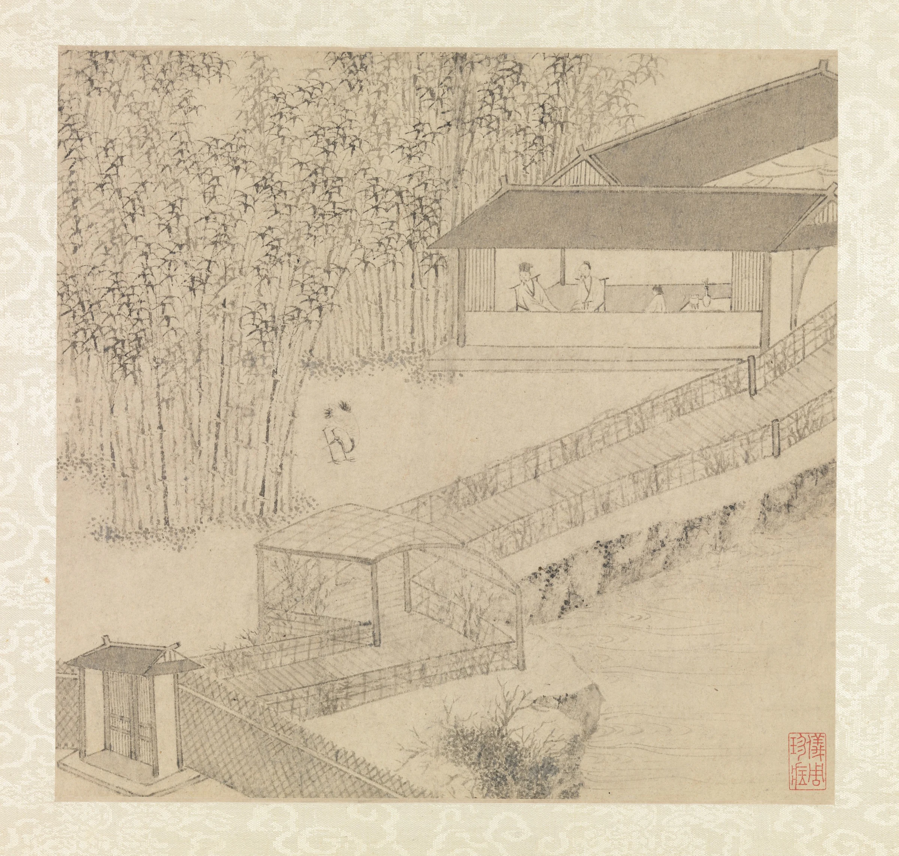
Wen Zhengming (1470–1559), leaf from the album Garden of the Inept Administrator (the Humble Administrator's Garden), dated 1551. Ink on paper. Metropolitan Museum of Art, 1979.458.1. Public domain, Wikimedia Commons.
Sources: Ebrey, Ch. 14, p. 241 (Material Culture: Gardens of Suzhou). Painting: Metropolitan Museum of Art; the painter and date are outside the textbook.
Q10 story · City bookshops · 1500s–1600s
Publishers Printed Books for Readers with Only Basic Schooling
Publishers printed large numbers of books that the urban middle classes could read.
Reference books and popular religious tracts were common, including ledgers for tallying good and bad deeds.
Publishers hired artists to illustrate books so they would sell better.
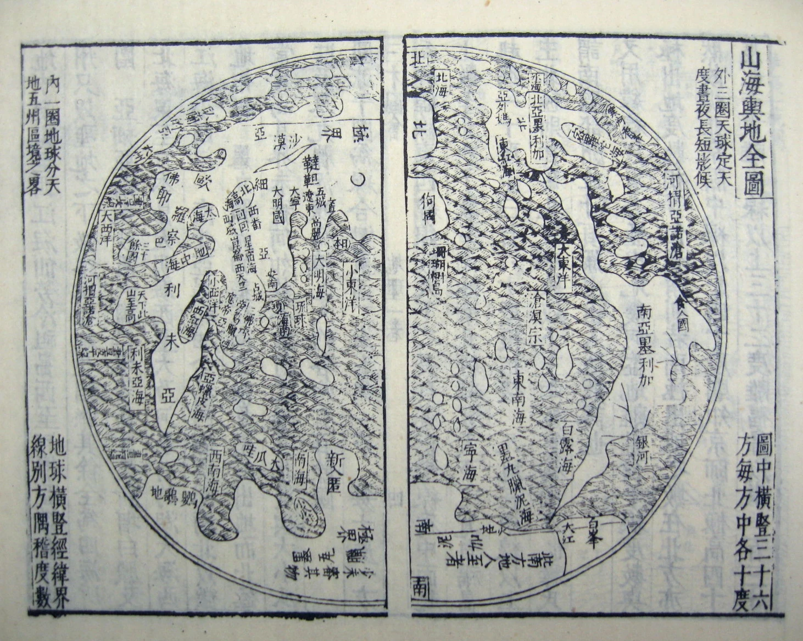
World map from the illustrated encyclopedia Sancai tuhui, compiled by Wang Qi and printed in 1609. Copy at the University of British Columbia Asian Library. Public domain, Wikimedia Commons.
Sources: Ebrey, Ch. 14, pp. 227, 242–243. Encyclopedia: details are outside the textbook.
Q10 story · A tea stall · 1500s
Stories Appeared in the Language People Actually Spoke
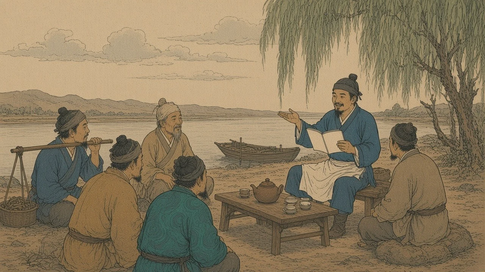
AI-generated illustration in a Ming woodblock-print style, made for this deck: a young clerk in a blue jacket reads aloud from an open book to a porter with a carrying pole, an old man and other listeners seated around a low tea table on a riverbank under a willow, with a boat moored behind. An interpretation, not a historical source.
Vernacular means the everyday spoken language, not the classical written language of officials.
By the mid-Ming, writers used the vernacular for short stories, novels, and plays.
Vernacular stories were full of shop clerks, merchants, monks, students, and matchmakers, people like their readers.
Sources: Ebrey, Ch. 14, pp. 243–244, 246.
Q10 story · The novel appears · 1500s
The First Full-Length Novels Grew Out of Storytellers' Tales
The plots of the early novels came from story cycles that oral storytellers had developed over centuries.
Water Margin tells of a band of bandits at the end of the Northern Song.
Romance of the Three Kingdoms retells the struggles of generals and statesmen at the end of the Han.
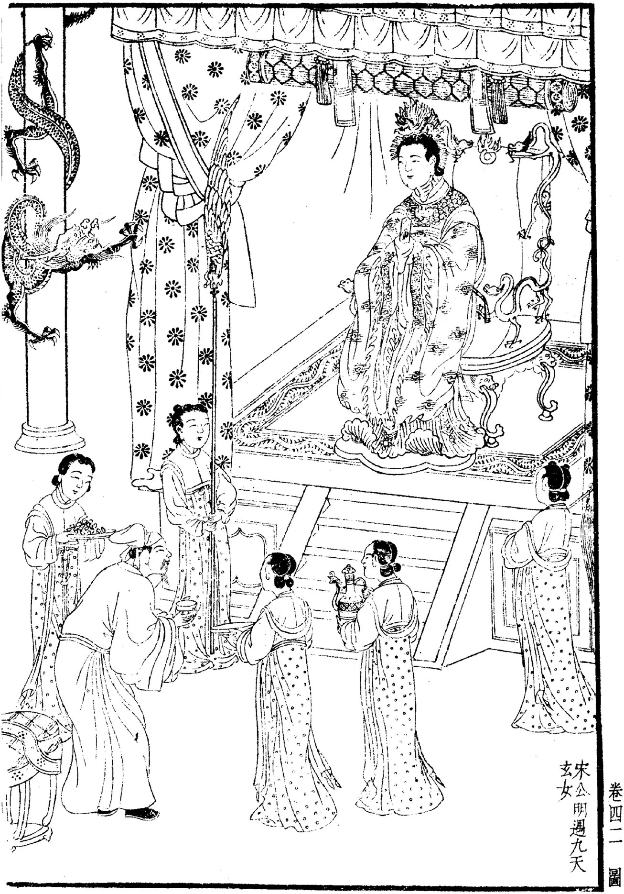
Illustration "Song Jiang meets the Mysterious Woman of the Ninth Heaven," from the late-Ming Rongyu Tang edition of Water Margin. Public domain, Wikimedia Commons.
Sources: Ebrey, Ch. 14, p. 244. Illustration: the edition and scene title are outside the textbook.
Q10 story · Rival editions · 1590s–1620s
Two More Novels Offered Fantasy and Daily Life
Journey to the West is a fantastic tale of the Tang monk Xuanzang's trip to India, with a magical monkey and a pig as companions.
Plum in the Golden Vase is a novel of manners about a lustful merchant, his wife, and five concubines.
Little is known about these authors, and rival publishers sold competing illustrated editions.
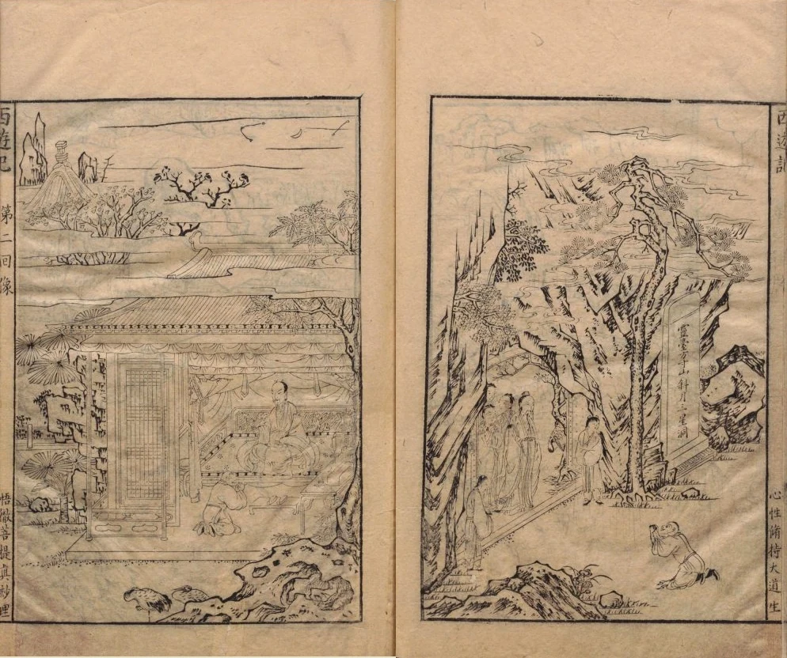
Illustrations for chapter 2 of Journey to the West, in which the monkey seeks out the Patriarch Subodhi to learn magic, from the late-Ming edition published under the name of Li Zhuowu. Public domain, Wikimedia Commons and second page.
Sources: Ebrey, Ch. 14, p. 244. Illustration: the edition and scene are outside the textbook.
Q10 story · Banquets and troupes · 1583–1610
Troupes Performed Musical Plays at Banquets That Could Last Ten Hours
The Jesuit missionary Matteo Ricci, in China from 1583 to 1610, saw acting troupes in cities and on the road.
Troupe leaders bought young children and trained them to sing and perform.
Ricci wrote that guests enjoyed the plays so much that "the banquet at times may last for ten hours."
Portrait of Matteo Ricci by the Chinese Jesuit brother You Wenhui (Emmanuel Pereira), c. 1610. Public domain, Wikimedia Commons.
Sources: Ebrey, Ch. 14, p. 244, quoting Louis J. Gallagher, tr., China in the Sixteenth Century: The Journals of Matthew Ricci, 1583–1610 (1953), p. 23, quoted in Ebrey, p. 244. Portrait: Wikimedia Commons; the painter and date are outside the textbook.
Q10 story · A garden pavilion · 1590s
People Read Play Scripts as Eagerly as They Watched Plays
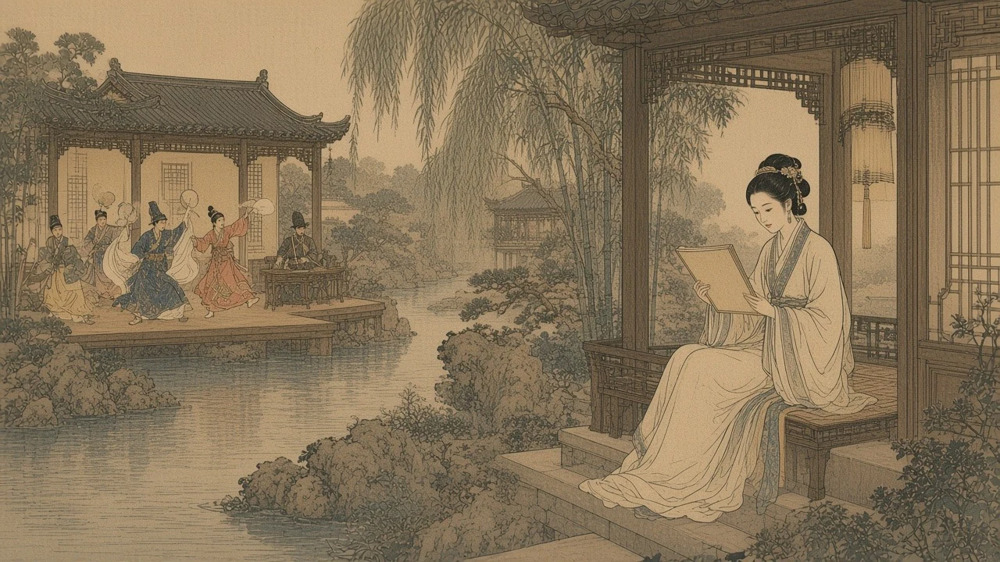
AI-generated illustration in a Ming woodblock-print style, made for this deck: a young woman in a pale robe reads a script in a garden pavilion while, across the water, costumed actors with fans rehearse on an open pavilion stage beside a musician. An interpretation, not a historical source.
Scripts were largely poetry, so people bought them to read as well as to perform.
Playwrights were less likely than novelists to hide their names.
The greatest Ming playwright, Tang Xianzu, was loved for his love stories and social satires.
Sources: Ebrey, Ch. 14, p. 244.
Q10 story · The Peony Pavilion · 1598
Tang Xianzu's Peony Pavilion (1598) Told of a Love That Conquered Death
A young woman from an official family falls in love with a man she meets in a dream, then pines away and dies.
The young man finds the portrait she buried in the garden, and his love brings her back to life.
In one comic scene the old tutor insists that a woman "at every step … should be screened from view."
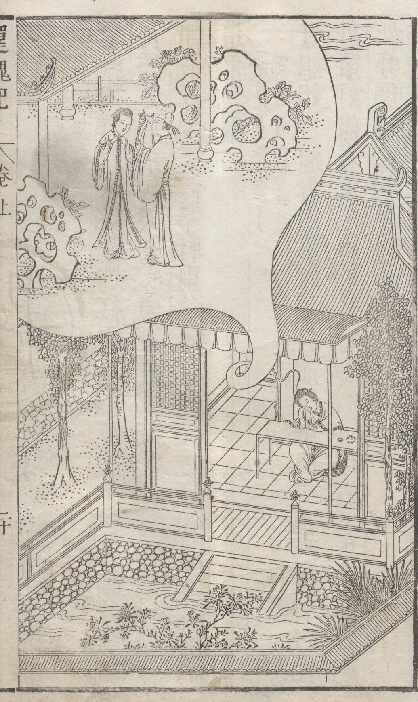
A young woman asleep in a garden pavilion dreams of meeting a young man. Woodblock illustration from a Wanli-era (1573–1620) printed edition of The Peony Pavilion. Tianyi Pavilion Museum. Public domain, Wikimedia Commons (page 26).
Sources: Ebrey, Ch. 14, pp. 242–243 (Documents: Scene from The Peony Pavilion), quoting Tang Xianzu, The Peony Pavilion, tr. Cyril Birch (1980), Scene 9, quoted in Ebrey, p. 243. Edition: outside the textbook.
Q10 story · A roadside inn · Tang Xianzu's satire
In Dream of Handan, a Whole Life Passed While Dinner Cooked
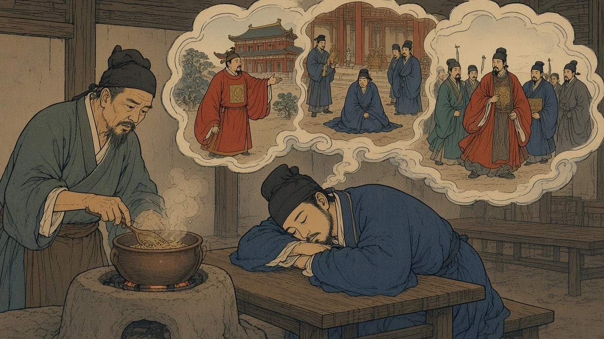
AI-generated illustration in a Ming woodblock-print style, made for this deck: a young man in a blue robe sleeps with his head on an inn table while an old innkeeper stirs a steaming pot; dream clouds above show him in a red official's robe before a palace and among officials. An interpretation, not a historical source.
In another Tang Xianzu play, a young man falls asleep while his dinner cooks.
He dreams he comes first in the jinshi exams, rises high, is condemned to death, then is cleared and promoted.
He wakes to find dinner nearly ready and sees that life passes as quickly as a dream.
Sources: Ebrey, Ch. 14, p. 244 (the textbook spells the title Dream of Han Tan).
Q10 story · A canal at night · 1600s
Fiction Changed How Educated People Judged Real Life
Readers began to judge themselves and others by the pure feelings of literary characters.
Intense, almost obsessive attachments came to be admired.
Courtesan culture flourished, and writers compared frustrated officials to talented women waiting to be appreciated.
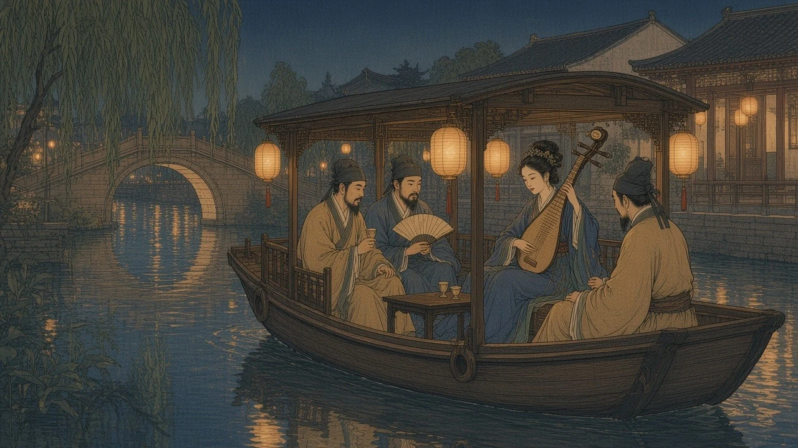
AI-generated illustration in a Ming woodblock-print style, made for this deck: on a canal at night, a courtesan plays the pipa for three scholars in a covered boat hung with lanterns, with an arched stone bridge behind them. An interpretation, not a historical source.
Sources: Ebrey, Ch. 14, p. 244.
Reading Guide · Review Question 10
Reading Guide · Review Question 10
Review Question 10
Describe the flourishing of urban culture in the Ming Dynasty. How did the rise of vernacular literature and musical drama reflect the changing tastes of the urban middle classes?
A throne with no buffer. Taizu abolished the chancellor in 1380, and later emperors such as Wanli could simply stop holding court. Lecture 1 · m ↩Lecture 1 · ff ↩
Costly defense. The northern frontier demanded endless walls and garrisons. Lecture 2 · o ↩
Money from abroad. Much of the silver the economy ran on came from overseas. Lecture 2 · t ↩
Strained villages. The unpaid village service system bred abuses and weighed on ordinary households. Lecture 3 · aa ↩
Sources: Ebrey, Ch. 14, pp. 229–230, 233–234, 240; Lectures 1–3 of this chapter. The link between the missing chancellor and late-Ming paralysis is Lecture 1's inference from the textbook.
Q11 story · The treasury · after 1600
After 1600 the Ming Government Was Nearly Bankrupt
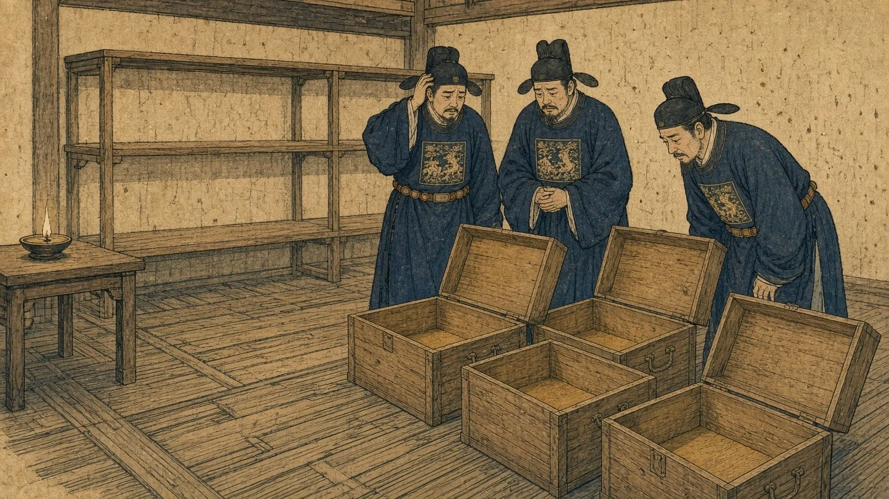
AI-generated illustration in a Ming woodblock-print style, made for this deck: three worried officials in dark robes and black caps stand over four treasury chests whose lids are thrown open to show them empty, beside bare shelves and a small oil lamp. An interpretation, not a historical source.
Defending Korea against Japan had cost the government heavily.
The government had to support an imperial clan that kept growing.
Relief for natural disasters drained what money remained.
Sources: Ebrey, Ch. 14, p. 244; see also Chs. 13 and 15.
Q11 story · The court · early 1600s
Officials Saw Every Problem in Moral Terms, and Factions Grew Fierce
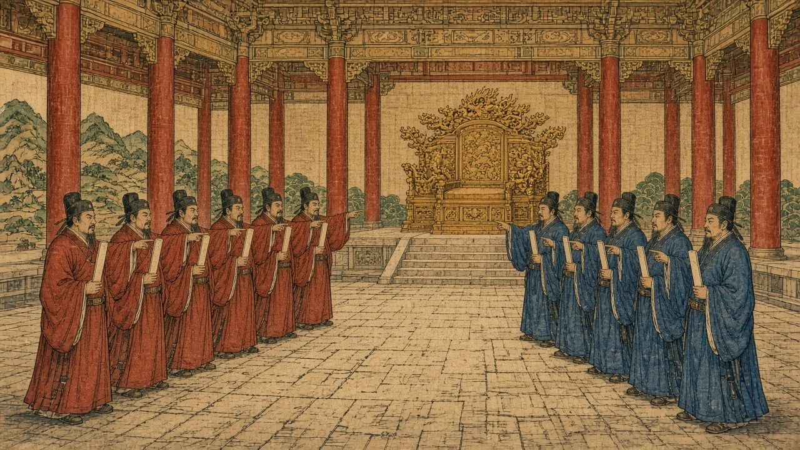
AI-generated illustration in a Ming woodblock-print style, made for this deck: two opposing lines of officials, one in red robes and one in blue, face each other across a palace hall and point accusingly, while the golden dragon throne on its dais stands empty between them. An interpretation, not a historical source.
Officials saw the dynasty's problems in moral terms, so the cure was to remove immoral men from power.
That view led to fierce factionalism, with accusations and counteraccusations.
Emperors grew weary of their officials and their infighting.
Sources: Ebrey, Ch. 14, p. 244.
Q11 story · Wuxi, Jiangsu · early 1600s
Donglin Critics Blamed Wang Yangming's Ideas for the Decline
Frustrated former officials at the Donglin Academy in Jiangsu called for a revival of orthodox Confucian ethics.
They blamed Wang Yangming for urging people to follow their innate knowledge.
To these critics, that sounded like telling people to pursue their personal advantage. Lecture 3 · r ↩
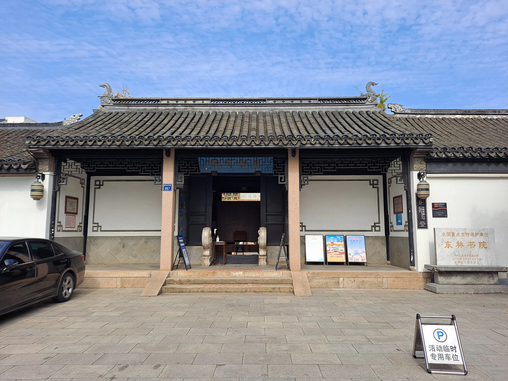
Gate of the Donglin Academy in Wuxi, Jiangsu, as rebuilt today. Photo: EditQ, CC BY-SA 4.0, Wikimedia Commons.
Sources: Ebrey, Ch. 14, pp. 239–240, 244. Photo: the rebuilt site and the city of Wuxi are outside the textbook.
Q11 story · North China · 1600s
A Colder Climate Shrank Harvests
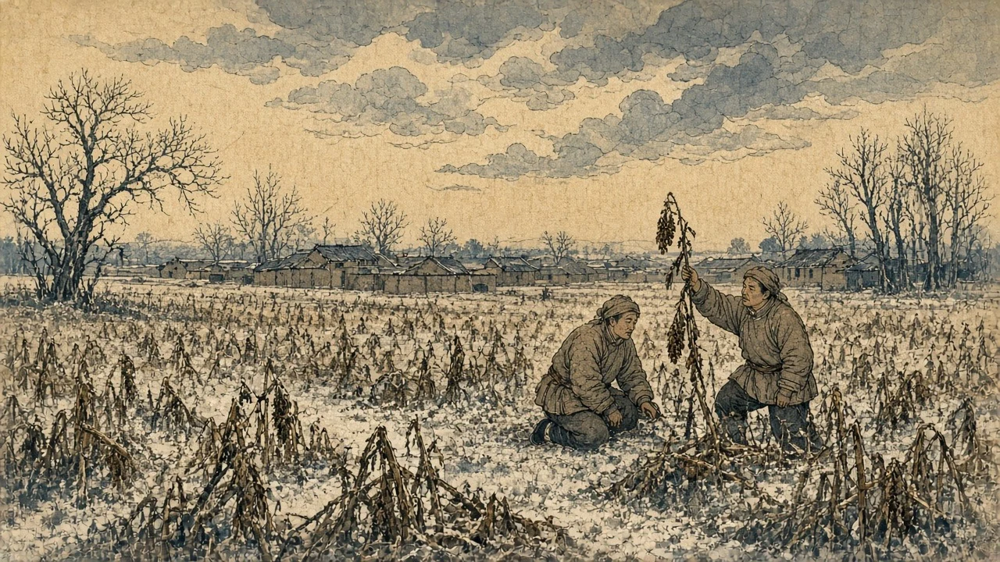
AI-generated illustration in a Ming woodblock-print style, made for this deck: under a grey wintry sky, two farmers kneel among fields of frost-killed, blackened stalks, one holding up a withered plant, with bare trees and a mud-walled village behind. An interpretation, not a historical source.
In the 1600s China, like much of the world, entered a little ice age.
Shorter growing seasons meant smaller harvests and less food.
Floods, droughts, locusts, and epidemics struck one region after another.
Sources: Ebrey, Ch. 14, p. 245. The phrase "like much of the world" is outside the textbook.
Q11 story · Northern Shaanxi · 1627–1632
Hungry Soldiers and Farmers Formed Gangs in Shaanxi in 1628
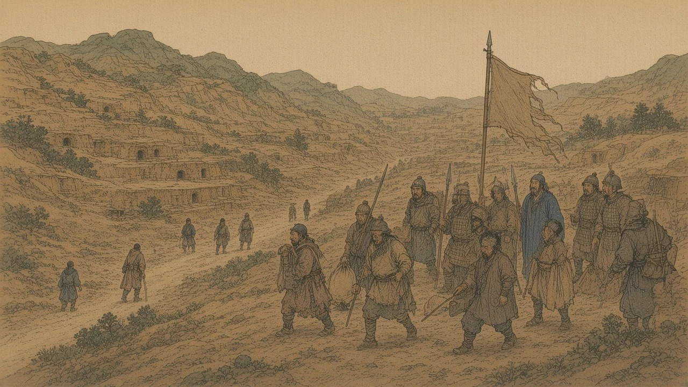
AI-generated illustration in a Ming woodblock-print style, made for this deck: in a dry loess valley lined with cave dwellings, ragged soldiers with spears and farmers carrying sacks gather under a torn plain banner as more people walk down the path to join them. An interpretation, not a historical source.
In 1627–1628 food shortages became critical in northern Shaanxi.
Army deserters and laid-off soldiers formed gangs to search the countryside for food.
Farmers whose grain had been seized joined the gangs to survive; by 1632 gangs had reached four more provinces.
Sources: Ebrey, Ch. 14, p. 245.
Q11 story · North and central China · 1630s
Two Rebel Leaders, Li Zicheng and Zhang Xianzhong, Rose to the Top
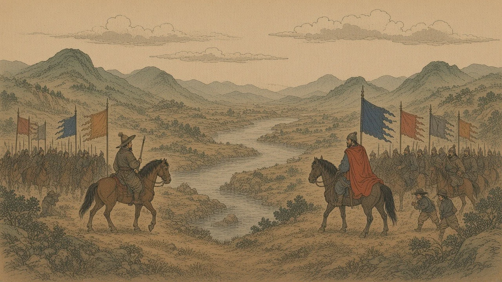
AI-generated illustration in a Ming woodblock-print style, made for this deck: two rebel leaders on horseback, one in a broad hat and one in a helmet and red cloak, face each other across a river valley, each backed by his own army under plain banners. An interpretation, not a historical source.
Li Zicheng, a former shepherd and postal relay worker, became the leading rebel in the north.
Zhang Xianzhong, a former soldier, led rebels in the lands between the Yellow and Yangzi rivers.
The government raised taxes to fight them, the last thing hungry people needed, while the two men raced to topple the Ming.
Sources: Ebrey, Ch. 14, p. 245.
Q11 story · Nagasaki and Manila · 1639
In 1639 the Flow of Silver Suddenly Dropped
In 1639 Japan refused to let traders from Macao into Nagasaki. Lecture 2 · t ↩
Months later, trade with the Spanish in the Philippines stopped after a slaughter of Chinese residents there.
Less silver meant deflation, so real rents rose, and hoarding of silver and grain created shortages.
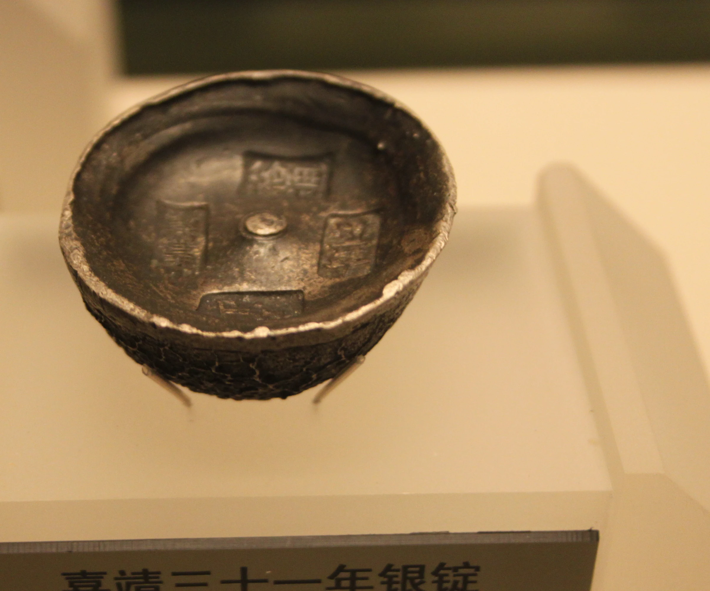
Ming silver ingot (sycee) stamped with a date of 1552 (Jiajing 31). Shanghai Museum. Photo: Gary Lee Todd, released CC0, Wikimedia Commons.
Sources: Ebrey, Ch. 14, pp. 234, 245. Ingot date and museum: outside the textbook.
Q11 story · Jiangnan · 1640s
In Jiangnan, Tenants Rose Against Landlords and Workers Rioted
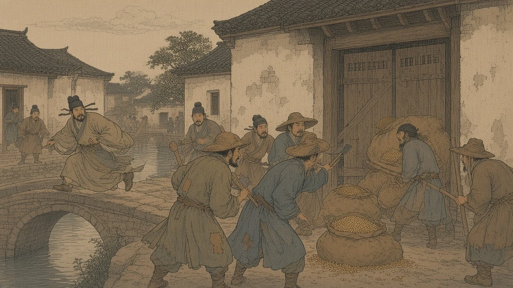
AI-generated illustration in a Ming woodblock-print style, made for this deck: in a canal town, tenant farmers in straw hats crowd the gate of a granary among spilled grain sacks, while a steward in an official's cap runs off across a stone bridge. An interpretation, not a historical source.
Even rich Jiangnan was not spared.
Tenant farmers rose up against their landlords.
Urban workers rioted in the cities.
Sources: Ebrey, Ch. 14, p. 245.
Q11 story · The Yellow River · 1642
In 1642 Rebels Broke the Yellow River Dikes
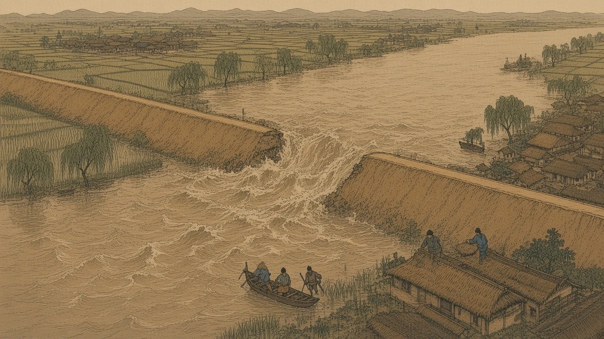
AI-generated illustration in a Ming woodblock-print style, made for this deck: seen from above, brown floodwater pours through a breach in an earthen river dike toward a village, where people take refuge on a rooftop and a small boat rows out. An interpretation, not a historical source.
In 1642 rebels cut the dikes of the Yellow River.
The river flooded the surrounding countryside.
A smallpox epidemic followed the flood.
Sources: Ebrey, Ch. 14, p. 245.
Q11 story · Beijing · 1644
In 1644 Li Zicheng Took Beijing, and the Last Ming Emperor Took His Own Life
In 1644 Li Zicheng's rebels moved through Hebei and into Beijing.
The last Ming emperor, in despair, took his own life.
Rebels, not foreign invaders, brought down the Ming.
Wanchun Pavilion on Jingshan, the hill just north of the Forbidden City in Beijing. Photo: Another Believer, CC BY-SA 4.0, Wikimedia Commons.
Sources: Ebrey, Ch. 14, p. 245. The Jingshan tradition and the pavilion's date are outside the textbook.
Recap · The collapse · 1600–1644
Recap: How the Crises Built on Each Other
Fiscal and political. A nearly bankrupt state, bitter factions, and failed reforms. o ↩p ↩q ↩
Environmental. A colder climate, hunger in Shaanxi, and disasters everywhere. r ↩s ↩
Economic and disaster. The silver supply dropped in 1639, and the 1642 flood brought epidemic. u ↩w ↩
Military. Deserters and laid-off soldiers became rebels, and rebels took Beijing in 1644. t ↩x ↩
Sources: Ebrey, Ch. 14, pp. 244–245.
Reading Guide · Review Question 11
Reading Guide · Review Question 11
Review Question 11
What combination of fiscal, environmental, and military crises culminated in the collapse of the Ming Dynasty in the early seventeenth century?
Rebels Held Beijing, but the Manchus Would Found the Next Dynasty
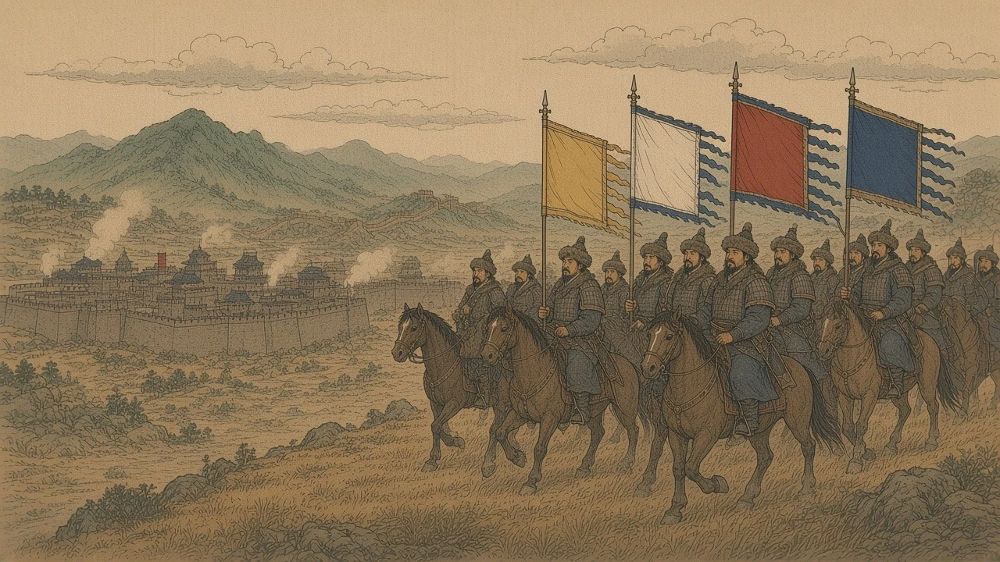
AI-generated illustration in a Ming woodblock-print style, made for this deck: a line of cavalry in fur caps and armor, under plain yellow, white, red and blue banners, rides along a ridge above a walled city where smoke rises. An interpretation, not a historical source.
Both rebel leaders founded dynasties, named officials, and minted coins.
Neither could pacify a large region, so the looting and violence went on.
How the Manchus ended this disorder is the story of Chapter 16.
Sources: Ebrey, Ch. 14, pp. 227, 245.
Beyond the lecture
Pierian Spring
Optional Independent Study
Three short side trips for curious readers. Nothing here is needed for the Reading Guide or the review questions.
"A little learning is a dang'rous thing; Drink deep, or taste not the Pierian spring."Alexander Pope, An Essay on Criticism, 1711
Pierian Spring · Suzhou gardens
PS: Garden Designers Framed Small, Intimate Views
Designers placed objects so they could be seen from a pavilion, a window, or a path.
Doorways and lattice windows framed small views, like pictures on a wall.
Walking through a garden meant moving from one framed scene to the next.
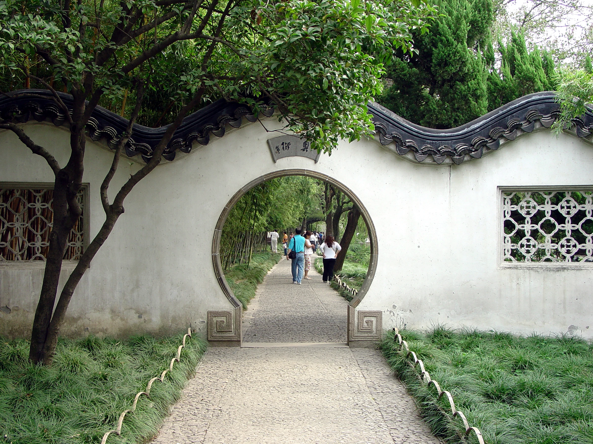
A round moon gate and lattice windows in the Humble Administrator's Garden, Suzhou. Photo: G41rn8, CC BY-SA 4.0, Wikimedia Commons.
Sources: Ebrey, Ch. 14, p. 241 (Material Culture).
Pierian Spring · Sichuan · 1644
PS: Zhang Xianzhong Turned to Sichuan
While Li Zicheng took Beijing, Zhang Xianzhong headed west into Sichuan.
His attacks on Chongqing and Chengdu led to widespread slaughter.
Like Li, he named officials and minted coins, but he never pacified the region.
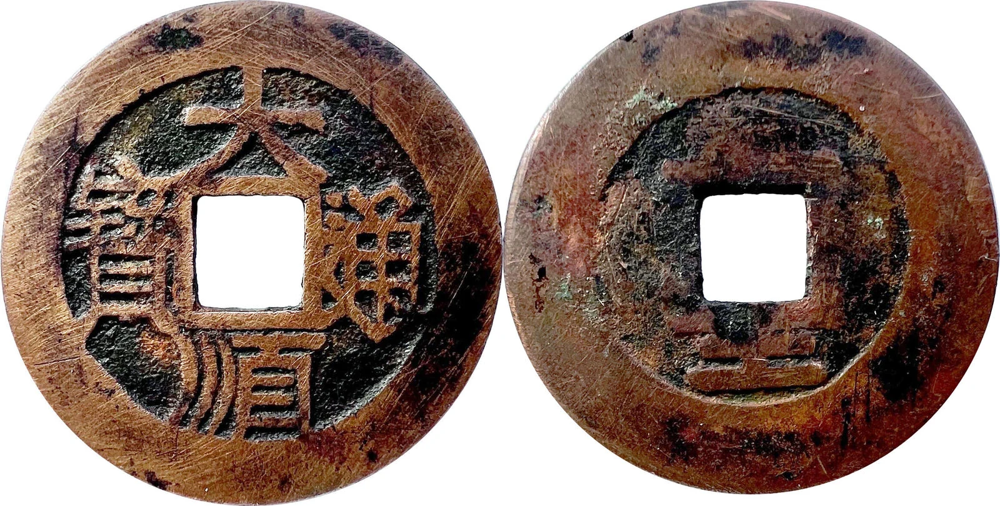
Bronze coin inscribed Da Shun tong bao, attributed to Zhang Xianzhong's regime in Sichuan, 1644–1647. Public domain, Wikimedia Commons.
Sources: Ebrey, Ch. 14, p. 245. Coin attribution: outside the textbook.
Pierian Spring · The Ming world in 1600
PS: Between 1368 and 1600 China Changed in Many Ways
By 1600 the population had reached perhaps 175 million.
More books aimed to entertain, and Jiangnan stayed several steps ahead of other regions.
Thinkers criticized inherited ideas more sharply, and the Great Wall remained a trace of old fears of the Mongols.
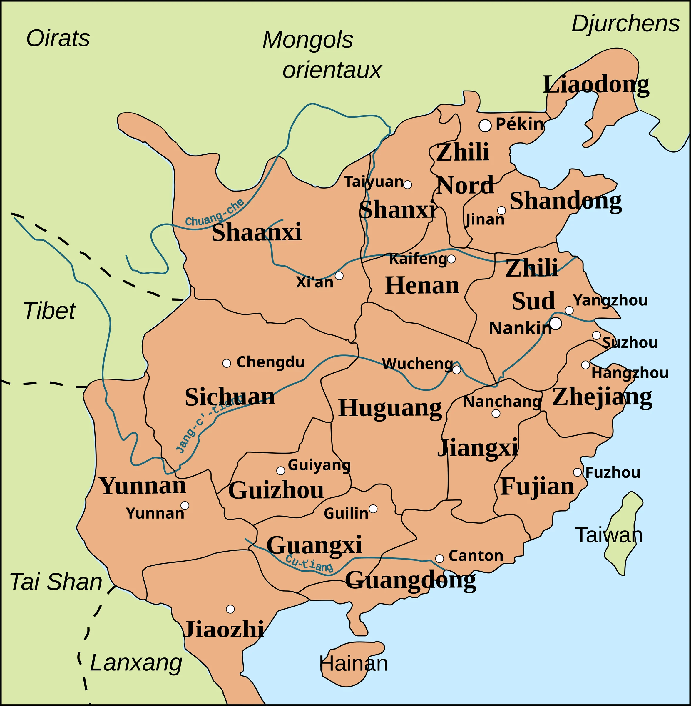
Provinces of Ming China in the early 1400s. Map: Michal Klajban (derivative work), CC BY-SA 3.0, Wikimedia Commons.
Sources: Ebrey, Ch. 14, p. 246 (Summary).
Sources and image credits
The Stories in This Deck Rest on These Sources
Textbook
Patricia Buckley Ebrey et al., course textbook, Chapter 14, "The Ming Empire in China (1368–1644)," pp. 227, 241–246, including Material Culture: Gardens of Suzhou (p. 241), Documents: Scene from The Peony Pavilion (pp. 242–243) and the Summary (p. 246).
Quotation of Matteo Ricci as given in the textbook (p. 244), from Louis J. Gallagher, tr., China in the Sixteenth Century: The Journals of Matthew Ricci, 1583–1610 (1953), p. 23.
Lines from The Peony Pavilion, Scene 9, as given in the textbook (p. 243), from Tang Xianzu, The Peony Pavilion, tr. Cyril Birch (1980).
Outside the textbook (flagged details)
Museum and Wikimedia Commons records for the images below (painters, editions, dates, locations).
Slide x: the tradition that the last Ming emperor died on Jingshan, and the Qing date of the Wanchun Pavilion. Slide dd: the attribution of the Da Shun tong bao coin to Zhang Xianzhong's regime. Slide o: the dates of the Japanese invasions of Korea. Slide g: the Li Zhi link and doubts about the commentary.
Slide b: Along the River During the Qingming Festival, attributed to Qiu Ying, Liaoning Provincial Museum (detail). Public domain; photo CC0, Wikimedia Commons.
Slide c: Wen Zhengming, album leaf, Garden of the Inept Administrator, 1551, Metropolitan Museum of Art 1979.458.1. Public domain, Wikimedia Commons.
Slide d: World map from Sancai tuhui, Wang Qi, 1609, UBC Asian Library. Public domain, Wikimedia Commons.
Slide f: Illustration from the Rongyu Tang edition of Water Margin, Ming. Public domain, Wikimedia Commons.
Slide g: Illustrations from the Li Zhuowu commentary edition of Journey to the West, chapter 2. Public domain, Wikimedia Commons.
Slide h: Portrait of Matteo Ricci by You Wenhui (Emmanuel Pereira), c. 1610. Public domain, Wikimedia Commons.
Slide j: Illustration from a Wanli-era edition of The Peony Pavilion, Tianyi Pavilion Museum. Public domain, Wikimedia Commons.
Slide q: Gate of the Donglin Academy, Wuxi. Photo: EditQ. CC BY-SA 4.0, Wikimedia Commons.
Slide u: Ming silver ingot dated 1552, Shanghai Museum. Photo: Gary Lee Todd. CC0, Wikimedia Commons.
Slide x: Wanchun Pavilion, Jingshan, Beijing. Photo: Another Believer. CC BY-SA 4.0, Wikimedia Commons.
Slide dd: Da Shun tong bao coin, 1644–1647. Public domain, Wikimedia Commons.
Slide ee: Ming provinces under Yongle, Michal Klajban (derivative). CC BY-SA 3.0, Wikimedia Commons.
Images (AI-generated)
Scene illustrations on slides e, i, k, l, o, p, r, s, t, v, w and aa are AI-generated interpretations made for this deck. They are not historical sources.
×
Vernacular
Vernacular means the everyday spoken language. In Ming China it was different from the literary (classical) language used for government documents, poetry and essays (Ebrey, pp. 243, 246).